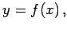

Inhalt Index DeskTop Bronstein

 Funktionen und ihre Darstellung Aufstellung empirischer Kurven Verfahrensweise
Funktionen und ihre Darstellung Aufstellung empirischer Kurven Verfahrensweise


Die Aufstellung einer Näherungsformel für eine Funktion  für die nur empirisch ermittelte Daten vorliegen, kann in zwei Schritte eingeteilt werden. Zuerst wird die Art der Näherungsformel ausgewählt, die in der Regel einige freie Parameter enthält. Danach erfolgt die numerische Bestimmung der Parameterwerte. Wenn es für die Wahl der Formel keine theoretischen Überlegungen gibt, dann wird unter den einfachsten dafür in Frage kommenden Funktionen eine Näherungsformel ausgesucht, indem ihre Kurvenbilder mit der Kurve der empirischen Daten verglichen werden. Die Entscheidung über die Ähnlichkeit der Kurvenbilder nach Augenmaß kann trügerisch sein. Daher ist nach der Wahl einer Näherungsfunktion vor der Bestimmung der Parameterwerte durch Rektifizierung zu prüfen, ob die gewählte Formel anwendbar ist.